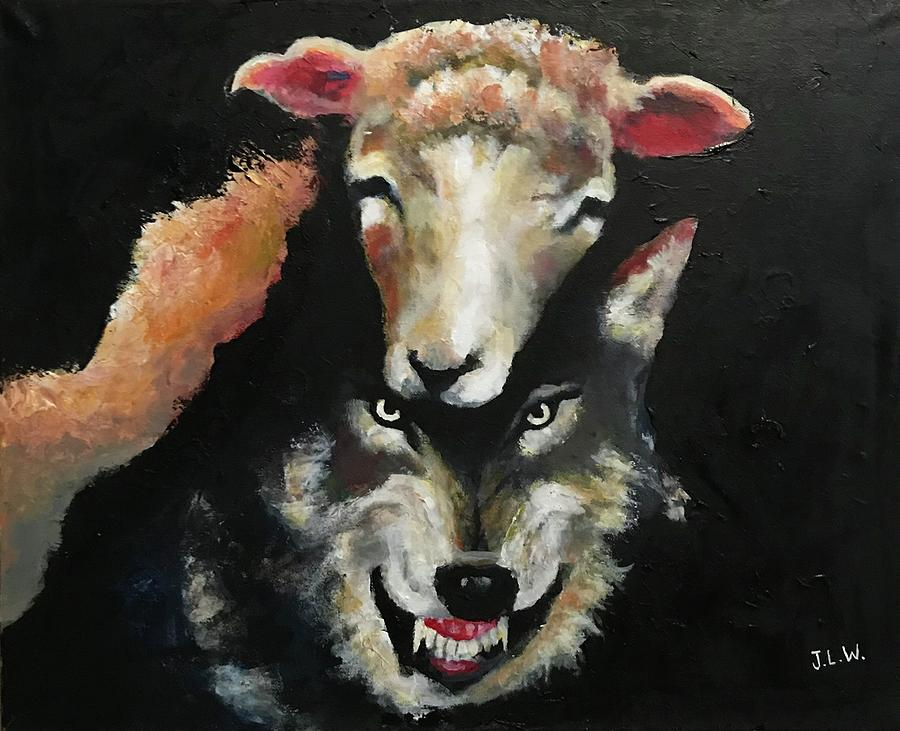
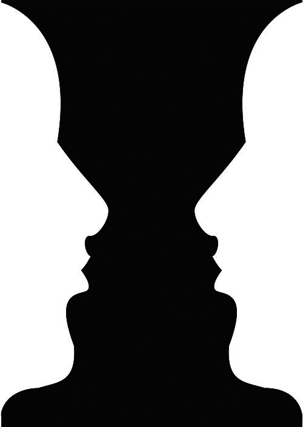

"Conceal me what I am, and be my aid for such disguise as haply shall become the form of my intent." (1.2.53-55)
In th asking the captain for his aid in disguising her as a man to help make Illyrian life easier. It will also help her in obtaining a job working for duke Orsino. This is related to appearance and reality because to other characters in the play, she appears as a man, but the reader sees her as a woman and knows the circumstances as to why she is doing so. Due to her disguise, it causes problems later in the play when Sebastian is mistaken as her.
"Yet, a barful strife! Whoe'er I woo, myself would be his wife." (1.4.41-42)
In this scene, Orsino asks Viola to abandon manners, to go woo Olivia for him and to come back with results. However, Viola and Orsino have known each other for only three days and they have gotten to know each other very well in that time. Due to the time that they have spent together, Viola has fallen in love with Orsino, but she cannot confess her love to him as that would expose her identity as a woman. So instead, Viola reluctantly goes to try and woo Olivia for Orsino.
"Why do you speak to me? I never hurt you. You drew your sword upon me without cause, but I bespake you fair, and hurt you not." (5.1.180-182)
When Viola tries to go woo Olivia for Orsino, Olivia ends up falling for Viola instead. Near the end of the play, Sir Andrew attempts to challenge Cesario to a duel to prove his love to Olivia. Viola is then mistaken for her brother Sebastian, who drew his sword at Sir Andrew in confusion and in self-defense. Sir Andrew then attempts to blame Viola of assulting him and in response, Viola denies the accusations. This is related to appearance and reality beacuse due to Viola's disguise and fake appearance, she is now experiencing the consequences of doing so.
Wolf in Sheep Clothing
By: Justin Lee Williams
In this image a wolf is wearing the skin of a sheep, presumably to disguise itself into a crowd of other sheep. The wolf uses its appearance in order to trick sheep, when the reality is that the wolf is actually trying to hunt them. This art piece tells people that even though a person may look like one of your own, it is not wise to trust them immediately. This idiom originated from a book in the New Testament in which it says to not trust false prophets wearing sheep's clothing.
Rubin Vase
Edgar Rubin
a
Test text.